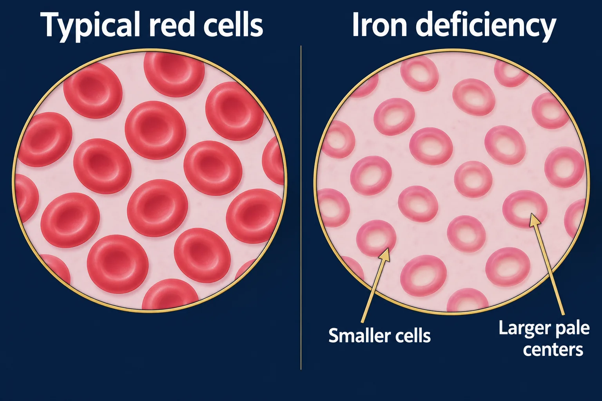

ABSN STUDY HUB · VISUAL STUDY CARD
Iron deficiency anemia and pica

Course labels and notes from the original graphic, arranged into readable sections. The illustration is schematic.
Course overview
IRON DEFICIENCY ANEMIA — SMALL CELLS, PALE CELLS
Too little iron makes small pale cells. The labs, the iron rules, and the craving that gives it away.
🚨 Toddlers on more than 24 oz of cow’s milk a day are the classic case — the milk fills them up and blocks the iron.
WHAT THE CELLS LOOK LIKE
WHAT THE CELLS LOOK LIKE
Normal
Big, deep red, small center
Iron deficient
Microcytic, hypochromic
🧪 THE LAB PATTERN
🧪 THE LAB PATTERN
Hemoglobin
↓ low
MCV (size)
↓ low
Ferritin (stores)
↓ low — earliest
TIBC
↑ HIGH
Reticulocytes
↑ rise once iron starts
Ferritin falls first, hemoglobin falls last.
💊 GIVING IRON SO IT ACTUALLY ABSORBS
💊 GIVING IRON SO IT ACTUALLY ABSORBS
Empty stomach absorbs best — with food if it upsets her. Vitamin C (orange juice) doubles absorption. Never with milk, antacids, tea or calcium — they block it. Liquid iron: straw, then rinse — it stains teeth. Stools turn black. That is expected, not bleeding. Give the full course — usually 3 months past a normal Hgb.
🧩 PICA
🧩 PICA
Eating things that are not food
🧊
ice
🩹
clay or dirt
📄
paper
🪟
paint chips
Paint chips also mean a lead level.